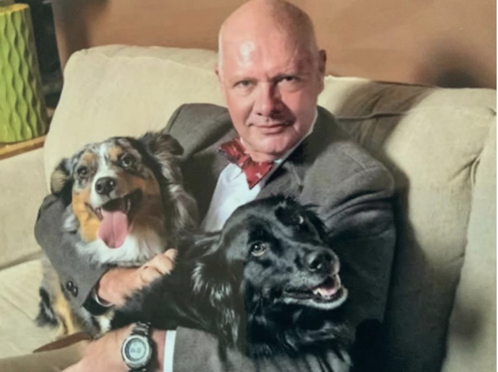

Core Team
About
The Core Team comprises the College Magister, the Old Dorm and New Dorm resident associates (RAs), and the college coordinator. The magister represents the college to the administration and lives on campus adjacent to the college (in a very nice, very large house), while the RAs live embedded with the students, one in Old Dorm and one in New. The College Coordinator has an office conveniently located next to the College Commons. Together, we work with students, especially the student government, to promote the academic success and well-being of all Will Rice College community members. We help students negotiate their college experience on multiple levels, not just academics. This can include advice on what courses to take, when to take them, potential majors, career counseling, study abroad, etc., but we also help with health issues, rooming concerns, disability accommodations, access to support resources, and many other daily needs. Students should feel free to get to know the Core Team, either to talk and socialize or if a particular question or need arises. If we don't know the answers, there is a good chance we know someone who does.
College Magister
Ken Whitmire
whitmir@rice.edu
Ken is a native of the Blue Ridge Mountains of southwestern Virginia. He obtained his
B.S. in Chemistry from Roanoke College before doing his doctoral work at Northwestern
University. After finishing a NATO Postdoctoral Fellowship at Cambridge University
(UK), he joined the Rice faculty in the Department of Chemistry. His research has
involved inorganic, organometallic and materials chemistry. Later, he received an
Alexander von Humboldt Research Fellowship that allowed him to do research (as well
as learn some German and experience German cuisine) at the Universität of Göttingen
(Germany) and was in Germany when the Berlin Wall fell (not to mention the last two
times that Germany won the Soccer World Cup). He had a long collaboration with
researchers at the Université de Rennes (Brittany, France) and spent a summer
teaching at Korea University (Seoul, South Korea). Additionally, he is an Associate
Dean for Academic Affairs in the Wiess School of Natural Sciences. During his time at
Rice he has taught both semesters of General Chemistry and Honors General
Chemistry, the Chemistry of Art (in collaboration with the MFAH) Transition Metal
Chemistry, Introductory Inorganic Chemistry and Instrumental Methods in Inorganic
Chemistry, as well as special topics in organometallic chemistry and single-crystal X-ray
diffraction.
Ken is a first-generation collegian, having grown up in a family with a strong sense of
family and a do-it-yourself mentality. His mother was into genealogy, and he can trace
some of his ancestry to Germany (back to the early 1600s), England, and Scotland. His
childhood was spent learning gardening, woodworking, sewing, cooking, baking, and
canning. His mother set him up in business baking and decorating cakes for her
colleagues. He learned quilting from a friend's mother when she organized a friendship
quilt for her daughter, one of Ken's high school friends. He is still an avid quilter and
owns two computerized quilting machines. He enjoys cooking and baking, finding
inspiration in his international travels. In addition to quilting, he enjoys oil painting,
playing piano, baking, and attempting not to kill his growing collection of orchids. He has
three children, all of whom have attended Rice: Rachel (Jones, 2006), Anna (Hanszen,
2008), and Kenton-David (McMurtry, 2018). Fun fact: he has a grandson named
Phoenix. He lives with two adorable puppies, Lady and Stella. Stella is a border collie-
golden retriever mix who has assumed the position of the matriarch of the family in her
old age. She is mostly annoyed by her younger sister, Lady, an affectionate, exuberant,
and hyperactive Australian shepherd. Lady is technically now a senior dog, too but
shows no signs of slowing down. Both feed on attention and expect unconditional love
and adoration. Students interested in having play visits with the dogs, taking them for
walks, or doing some dog sitting should let Ken know of their interest.

College Coordinator
@coordinator
wrc@rice.edu
Hi, Will Ricers! I’m thrilled to be part of the vibrant Will Rice College crew!
My name is Tiffany King, and I’m no stranger to Rice University’s warm and welcoming vibe,
having previously served as the Welcome Center Manager from January 2023 to January 2024.
I’m beyond excited to be back, soaking up the spirited energy of this amazing community!
Originally from Cheyenne, Wyoming, I grew up as a military kid,
which gave me the incredible opportunity to live in Kaiserslautern, Germany,
from second grade through the start of my sophomore year.
Those years sparked my love for exploring different cultures,
languages, and traditions—I’m all about connecting with people
and celebrating what makes us unique yet united.
When I’m not cheering on our students, you’ll likely find me smashing a tennis ball
(inspired by my high school junior, who’s the varsity tennis captain!),
taking my dog, Cooper, for romps at the dog park, or rooting for my beloved LA Dodgers.
I’m also a fantasy football enthusiast, so hit me up if you want to trade game-day
strategies or chat about sports! Traveling is another passion of mine,
and I’m always up for swapping stories about adventures near and far.
I hold a Bachelor’s in Interdisciplinary Studies, a Master’s in Human Resource Management,
and a Doctorate in Educational Leadership. My career has spanned college admissions,
and I even run my own consulting firm to help students navigate undergraduate
and graduate school applications. If you’re prepping for grad school,
I’d love to lend a hand with essays or applications—just say the word!
At Will Rice, I’m excited to dive into the college’s one-of-a-kind traditions and support you in your academic, personal, and social journeys. Let’s make some unforgettable memories together!
Here’s a quote that keeps me inspired:
“You don’t have to be great to start, but you have to start to be great.” – Zig Ziglar

New Dorm RAs
Jamie Catanese and Joey Olmos
djc98@rice.edu
olmos@rice.edu
Joey:
I grew up in the Rio Grande Valley and am proud to be Tejano,
so returning home is still an important part of my life.
I try to visit every couple of months, even just for a weekend, to spend time with my mom,
sister, and niece, and to stay connected to the people and places that have shaped me.
My educational journey took me from the University of Texas at Austin for my undergraduate degree
to Rice University for my PhD, and then to UCSF for my postdoctoral work.
I first got involved in research as a freshman at UT
through the Freshman Research Initiative’s Virtual Drug Screening stream.
This experience introduced me to the excitement of asking unanswered questions
within a community of scientists. My research has focused on biochemistry and biophysics,
in which I have used time-resolved X-ray crystallography at X-ray free-electron laser facilities.
My goal was to create something akin to a molecular movie,
observing how a protein changes shape as an enzyme performs its chemistry and interacts with its substrate.
Over time, I’ve come to view science and research as a lifelong journey of learning
from those who have come before us, building on their discoveries,
and helping those who will come after us to take the next steps.
The mentor-mentee relationship has been one of the most meaningful aspects of my scientific career.
As a graduate student at Rice, I co-directed a summer Research Experiences for Undergraduates (REU)
program for four summers (2016–2019). I am currently in my fourth year as a teaching faculty member
at Rice. I love mentoring students, helping them recognize their potential,
providing the support they need to explore, and watching them carve out their own paths.
I genuinely enjoy getting to know students as whole individuals,
not just as names on a roster or as participants in a classroom.
Outside of academics, I enjoy cooking, fishing, reading poetry and literature,
listening to music (and I’m still hoping for another Frank Ocean album!),
and getting outside whenever I can. I also have a three-toed box turtle named Eloise.
My door is always open—whether you need a snack, a conversation, advice about classes or life,
a quiet place to relax, or just want to meet Eloise. Please feel free to reach out!
I’m excited to be a part of Will Rice and to get to know all of you! WRWS!!
Jamie:
Hey Will Ricers! I am excited to be in my first year as a resident associate alongside Joey
in New Dorm. I was born and raised in Shreveport, LA and am an only child (technically)
and have a half-sister. I have an extended family who has the mantra that you can marry
into the family but never leave. Growing up, I emulated my dad who gave me an awe and love
of nature through gardening and fishing. My mom, on the other hand,
was very much a lover of the indoors, enjoying reading and crosswords,
so I also enjoy sudoku and word puzzles of all sorts. Her family was also big on genealogy,
and I can trace my mom’s side of the family back to the 1660s in Maryland and how I
am related to Francis Scott Key, F. Scott Fitzgerald, Mary Surratt, and Wallace Simpson.
I am a first-generation college student and attended Texas A&M University earning my bachelor's
degree in Biochemistry and Genetics in 1998. I then came to Rice University earning my Ph.D.
in Biochemistry and Cell Biology in 2005. At that time, I continued my academic trajectory
with postdoctoral work at Baylor College of Medicine but soon discovered that I love teaching
and helping others figure things out in biology.
I returned to Rice in 2015 to the Biosciences Department to teach undergraduate students.
Besides teaching, I do lots of advising and enjoying nerding out.
My roommate is an energetic mutt, Wookie, who is a fantastic mix of Pit,
Chihuahua, Rottweiler, and a few other breeds to spice it up.
She trash talks other dogs on campus because she knows she is at the best college
and her collar says so! Be warned that she sometimes gets overwhelmed
with larger groups and immediately judges you to decide if she likes you or not.
She enjoys treats, cuddles, walks on campus, and claims everything that the light touches.
I look forward to meeting each of you and learning about you. Our door is always open!